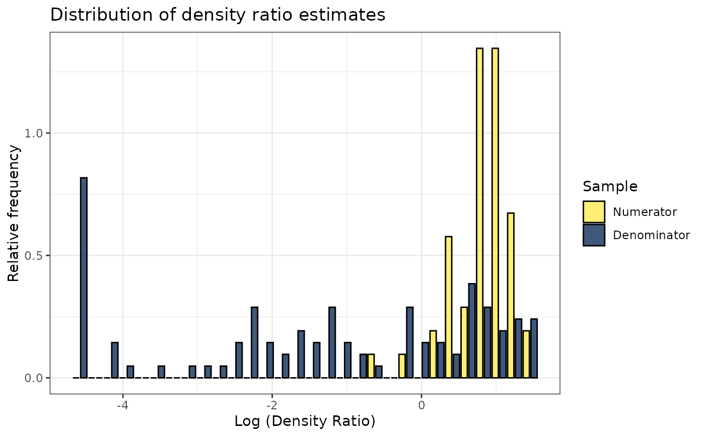
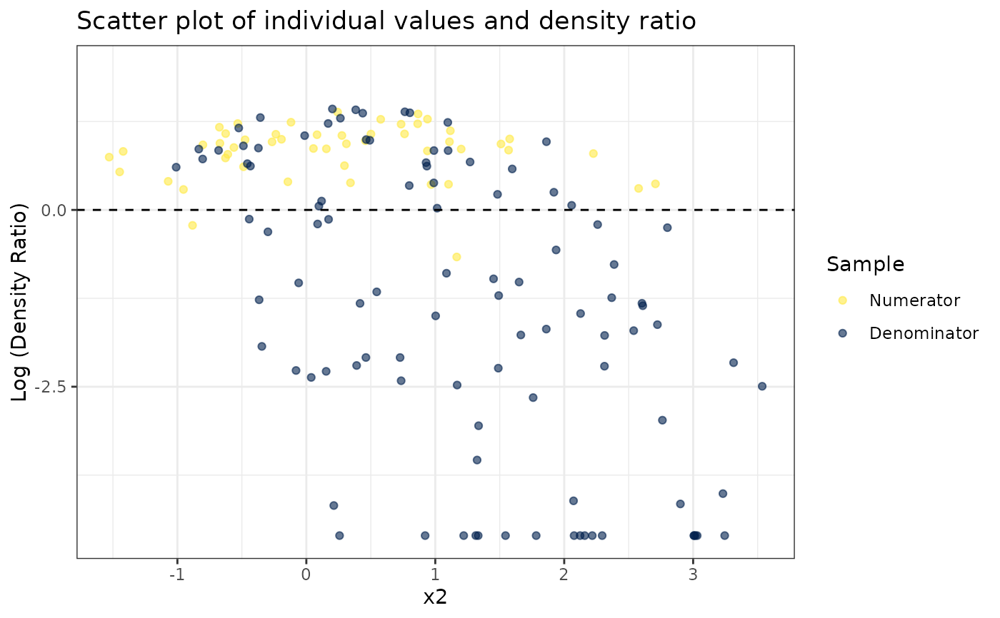
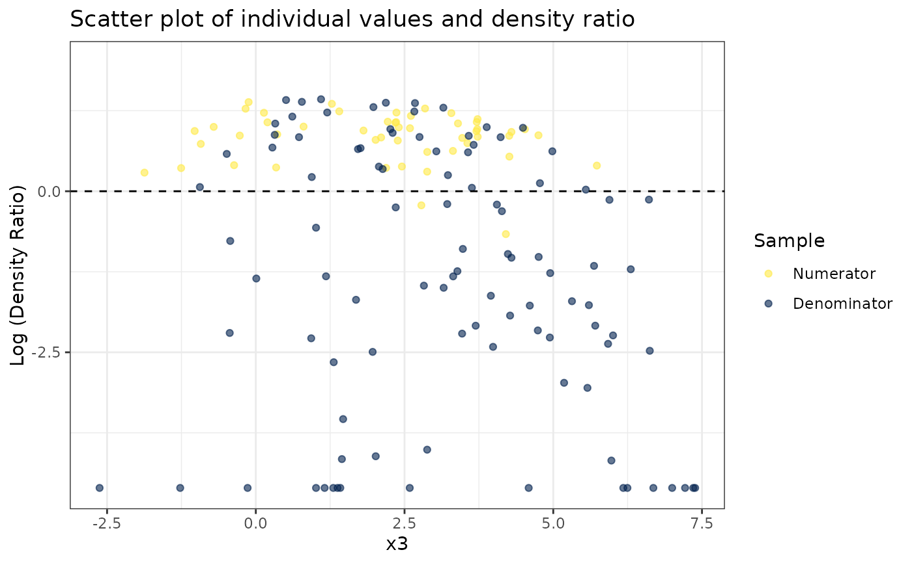
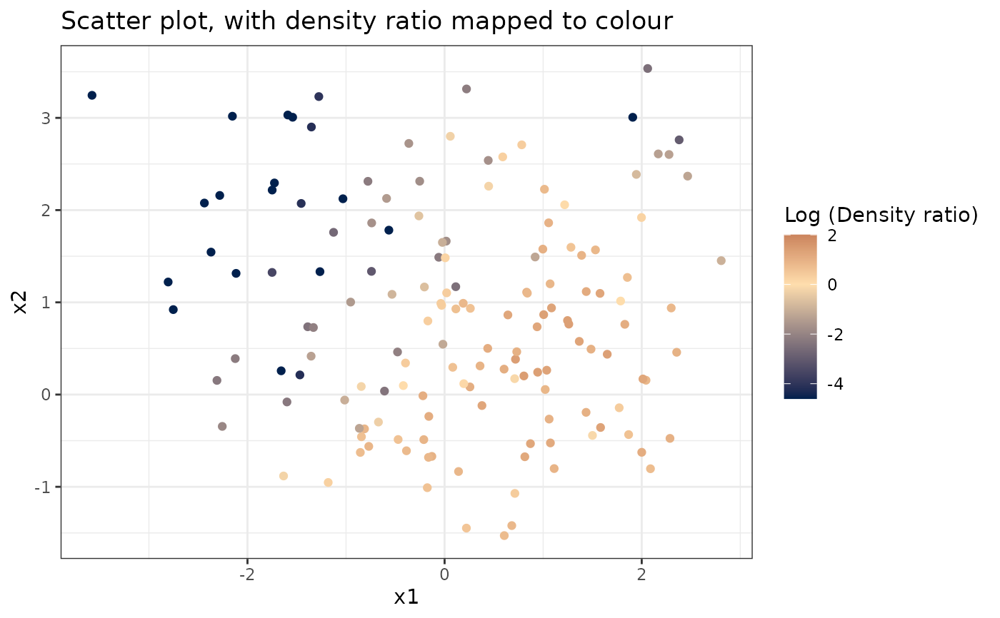
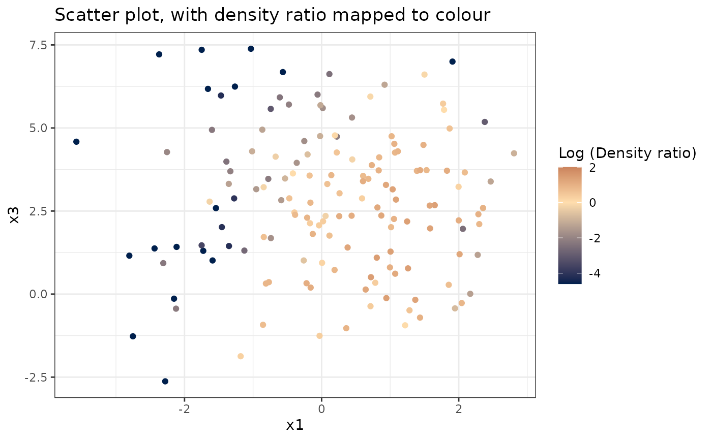
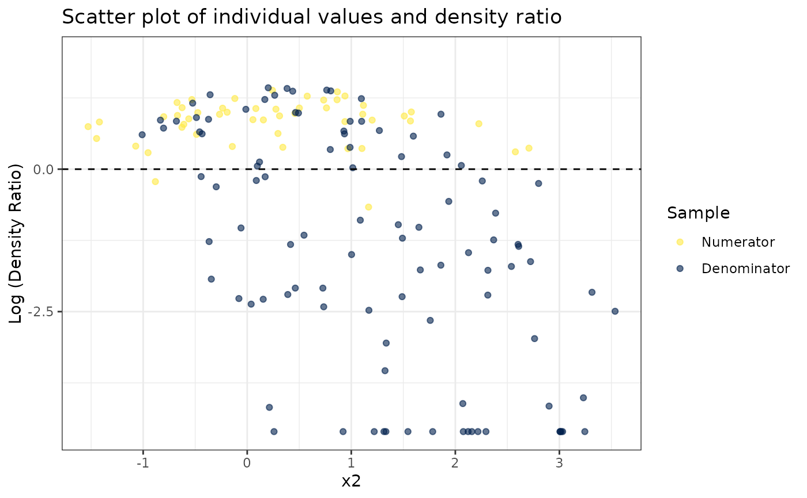
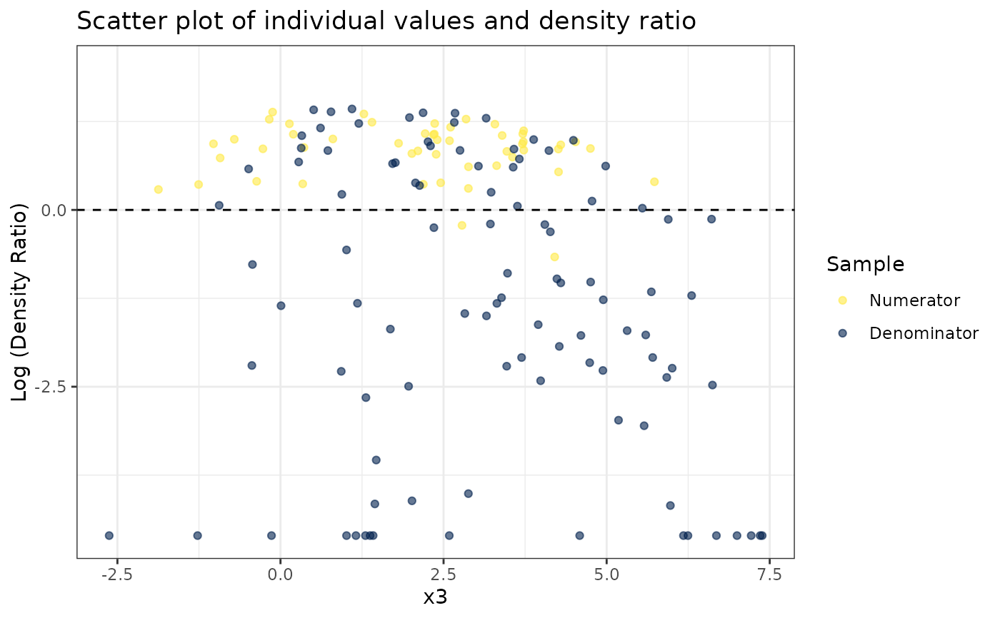
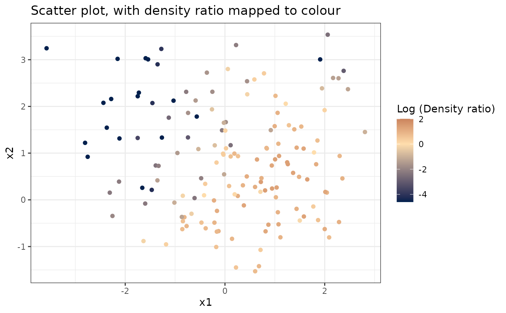
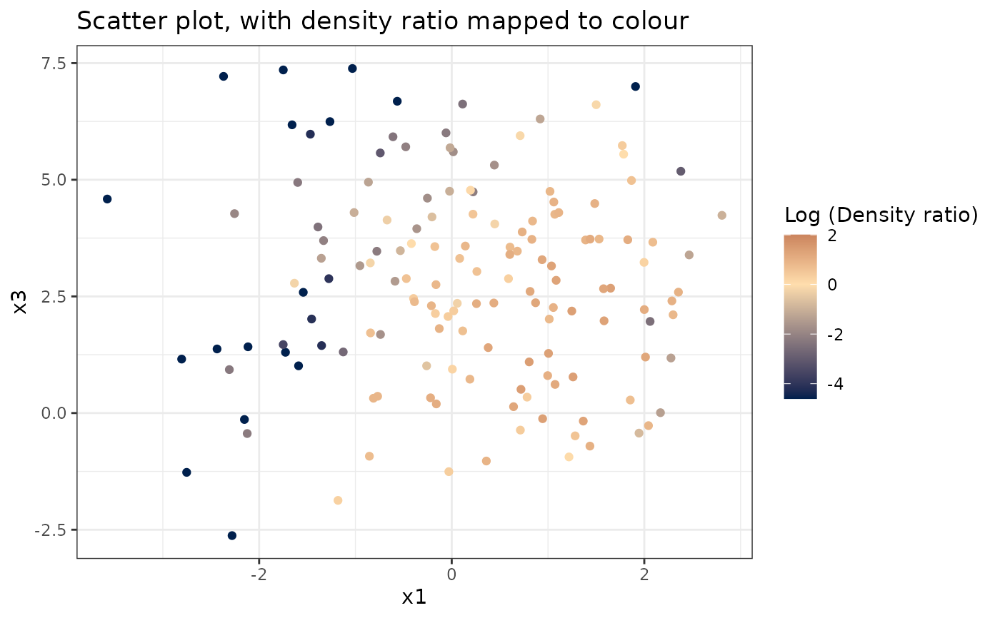

Kullback-Leibler importance estimation procedure
Usage
kliep(
df_numerator,
df_denominator,
scale = "numerator",
nsigma = 10,
sigma_quantile = NULL,
sigma = NULL,
ncenters = 200,
centers = NULL,
cv = TRUE,
nfold = 5,
epsilon = NULL,
maxit = 5000,
progressbar = TRUE
)Arguments
- df_numerator
data.framewith exclusively numeric variables with the numerator samples- df_denominator
data.framewith exclusively numeric variables with the denominator samples (must have the same variables asdf_denominator)- scale
"numerator","denominator", orNULL, indicating whether to standardize each numeric variable according to the numerator means and standard deviations, the denominator means and standard deviations, or apply no standardization at all.- nsigma
Integer indicating the number of sigma values (bandwidth parameter of the Gaussian kernel gram matrix) to use in cross-validation.
- sigma_quantile
NULLor numeric vector with probabilities to calculate the quantiles of the distance matrix to obtain sigma values. IfNULL,nsigmavalues between0.25and0.75are used.- sigma
NULLor a scalar value to determine the bandwidth of the Gaussian kernel gram matrix. IfNULL,nsigmavalues between0.25and0.75are used.- ncenters
Maximum number of Gaussian centers in the kernel gram matrix. Defaults to all numerator samples.
- centers
Option to specify the Gaussian samples manually.
- cv
Logical indicating whether or not to do cross-validation
- nfold
Number of cross-validation folds used in order to calculate the optimal
sigmavalue (default is 5-fold cv).- epsilon
Numeric scalar or vector with the learning rate for the gradient-ascent procedure. If a vector, all values are used as the learning rate. By default,
10^{1:-5}is used.- maxit
Maximum number of iterations for the optimization scheme.
- progressbar
Logical indicating whether or not to display a progressbar.
Value
kliep-object, containing all information to calculate the
density ratio using optimal sigma and optimal weights.
References
Sugiyama, M., Suzuki, T., Nakajima, S., Kashima, H., Von Bünau, P., & Kawanabe, M. (2008). Direct importance estimation for covariate shift adaptation. Annals of the Institute of Statistical Mathematics 60, 699-746. Doi: https://doi.org/10.1007/s10463-008-0197-x.
Examples
set.seed(123)
# Fit model
dr <- kliep(numerator_small, denominator_small)
# Inspect model object
dr
#>
#> Call:
#> kliep(df_numerator = numerator_small, df_denominator = denominator_small)
#>
#> Kernel Information:
#> Kernel type: Gaussian with L2 norm distances
#> Number of kernels: 150
#> sigma: num [1:10] 0.711 1.08 1.333 1.538 1.742 ...
#>
#> Optimal sigma (5-fold cv): 0.7105
#> Optimal kernel weights (5-fold cv): num [1:150, 1] 0.476 0.67 0.578 0.678 0.603 ...
#>
#> Optimization parameters:
#> Learning rate (epsilon): 1e+01 1e+00 1e-01 1e-02 1e-03 1e-04 1e-05
#> Maximum number of iterations: 5000
# Obtain summary of model object
summary(dr)
#>
#> Call:
#> kliep(df_numerator = numerator_small, df_denominator = denominator_small)
#>
#> Kernel Information:
#> Kernel type: Gaussian with L2 norm distances
#> Number of kernels: 150
#> Optimal sigma: 0.7105233
#> Optimal kernel weights: num [1:150, 1] 0.476 0.67 0.578 0.678 0.603 ...
#>
#> Kullback-Leibler divergence between P(nu) and P(de): 0.8268
#> For a two-sample homogeneity test, use 'summary(x, test = TRUE)'.
#>
# Plot model object
plot(dr)
#> Warning: Negative estimated density ratios for 16 observation(s) converted to 0.01 before applying logarithmic transformation
#> `stat_bin()` using `bins = 30`. Pick better value with `binwidth`.

# Plot density ratio for each variable individually
plot_univariate(dr)
#> Warning: Negative estimated density ratios for 16 observation(s) converted to 0.01 before applying logarithmic transformation
#> [[1]]
 #>
#> [[2]]

#>
#> [[3]]

#>
# Plot density ratio for each pair of variables
plot_bivariate(dr)
#> Warning: Negative estimated density ratios for 16 observation(s) converted to 0.01 before applying logarithmic transformation
#> [[1]]

#>
#> [[2]]

#>
#> [[3]]
#>
#> [[2]]

#>
#> [[3]]

#>
# Plot density ratio for each pair of variables
plot_bivariate(dr)
#> Warning: Negative estimated density ratios for 16 observation(s) converted to 0.01 before applying logarithmic transformation
#> [[1]]

#>
#> [[2]]

#>
#> [[3]]
 #>
# Predict density ratio and inspect first 6 predictions
head(predict(dr))
#> [,1]
#> [1,] 1.432706
#> [2,] 2.696996
#> [3,] 3.600185
#> [4,] 2.715088
#> [5,] 2.219022
#> [6,] 2.930002
# Fit model with custom parameters
kliep(numerator_small, denominator_small,
nsigma = 1, ncenters = 100, nfold = 10,
epsilon = 10^{2:-5}, maxit = 500)
#>
#> Call:
#> kliep(df_numerator = numerator_small, df_denominator = denominator_small, nsigma = 1, ncenters = 100, nfold = 10, epsilon = 10^{ 2:-5 }, maxit = 500)
#>
#> Kernel Information:
#> Kernel type: Gaussian with L2 norm distances
#> Number of kernels: 100
#> sigma: num 1.85
#>
#> Optimal sigma (10-fold cv): 1.852
#> Optimal kernel weights (10-fold cv): num [1:100, 1] 0.039 0 0.0659 0 0.0786 ...
#>
#> Optimization parameters:
#> Learning rate (epsilon): 1e+02 1e+01 1e+00 1e-01 1e-02 1e-03 1e-04 1e-05
#> Maximum number of iterations: 500
#>
# Predict density ratio and inspect first 6 predictions
head(predict(dr))
#> [,1]
#> [1,] 1.432706
#> [2,] 2.696996
#> [3,] 3.600185
#> [4,] 2.715088
#> [5,] 2.219022
#> [6,] 2.930002
# Fit model with custom parameters
kliep(numerator_small, denominator_small,
nsigma = 1, ncenters = 100, nfold = 10,
epsilon = 10^{2:-5}, maxit = 500)
#>
#> Call:
#> kliep(df_numerator = numerator_small, df_denominator = denominator_small, nsigma = 1, ncenters = 100, nfold = 10, epsilon = 10^{ 2:-5 }, maxit = 500)
#>
#> Kernel Information:
#> Kernel type: Gaussian with L2 norm distances
#> Number of kernels: 100
#> sigma: num 1.85
#>
#> Optimal sigma (10-fold cv): 1.852
#> Optimal kernel weights (10-fold cv): num [1:100, 1] 0.039 0 0.0659 0 0.0786 ...
#>
#> Optimization parameters:
#> Learning rate (epsilon): 1e+02 1e+01 1e+00 1e-01 1e-02 1e-03 1e-04 1e-05
#> Maximum number of iterations: 500